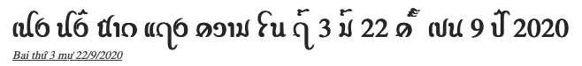
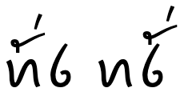
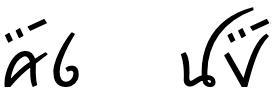

This page gathers together basic information about the Tai Viet script and its use for the Tai Dam language. It aims (generally) to provide an overview of the orthography and typographic features, and (specifically) to advise how to write Tai Dam using Unicode.
See also the companion document, Tai Viet character notes, for detailed information about specific Unicode characters.
Phonetic transcriptions on this page should be treated as an approximate guide, only. Many are more phonemic than phonetic, and there may be variations depending on the source of the transcription.
The Tai Viet script is used for writing the Tai Dam (Black Tai or Tai Noir), Tai Dón (White Tai or Tai Blanc), Tai Daeng, Thai Song (Lao Song or Lao Song Dam) and Tày Tac languages spoken in Vietnam, Laos, China and Thailand. There is also a diaspora in the United States, Australia and France.
The total population using the three languages, across all countries, is estimated to be 1.3 million (Tai Dam 764,000, Tai Dón 490,000, Thai Song 32,000). The script is still used by the Tai people in Vietnam, and there is a desire to introduce it into formal education there.
Names: ꪼꪕꪒꪾ Tai Dam.
Little is known about the origin of the Tai Viet script. It appears to have been derived from the Thai script around the 16th century.
Significant variation occurs in the orthographic conventions of the Tai languages, as well as in their phonologies. A unified, standardized version of the script, with an agreed upon core set of characters, was developed at a UNESCO-sponsored workshop in 2006, and subsequently accepted for encoding in The Unicode Standard.
The script is an alphabet. Both consonants and vowels are indicated by letters. See the table to the right for a brief overview of features for the modern Tai Dam orthography. (See the key. Character counts exclude ASCII characters.)
The Tai Viet script is heavily syllable-based, with exceptions being a very small number of unstressed initial syllables, and loan words.
Tai Viet text runs left to right in horizontal lines.
Words are separated by spaces, although this is a recent innovation.
Each consonant is associated with a high or low class to indicate tone. Tone is indicated by a combination of the consonant class, the syllable type (checked/unchecked), plus any tone mark.
There are no conjuncts or subjoined consonants.
The only syllable-initial cluster involves labialisation, using ꪫw.
Syllable-final consonant sounds use a subset of ordinary letters, but since there is no inherent vowel, it is still simple to detect syllable boundaries. Some syllable-final consonant sounds are built into vowel-consonant graphemes.
The Tai Dam orthography has no inherent vowel, and represents vowels using 15 vowel-signs (including 5 prescripts), and 5 consonants. Vowel signs are a mixture of ordinary spacing characters, and combining marks.
This page lists only 6 composite vowels, made from 6 vowel signs and 3 consonants. Composite vowels can involve up to 3 glyphs, though usually only 2, and glyphs can surround the base consonant(s) on 2 sides, eg. ꪵꪁꪫꪥɛkwy.
Tone can be indicated either by diacritics or by ordinary spacing characters. Both are a recent innovation. Combining tone marks always follow the root consonant and any combining vowels, ie. they come before any postscript vowel. Spacing tone marks always come at the very end of the syllable.
Character index
This section lists non-ASCII characters used for Tai Dam/Don, and other characters in the Tai Viet script block not used by those languages. For descriptions of usage, click on ↓.
The Tai languages are almost exclusively monosyllabic. A very small number of words have an unstressed initial syllable, and loan words may be polysyllabic.b
The essential character sequence of a Tai Viet syllable is:
prescript vowel?, root consonant(s), combining vowel?, postscript vowel?, final consonant?
The root consonant(s) may be a cluster involving labialisation. Any combining vowel goes after the root consonant(s).
Tone marks expressed as combining characters always follow the root consonant(s) and any combining vowels, which means that they come before any postscript vowel.
Tone marks expressed as spacing characters always come at the very end.
-ap. One other sequence occurs when writing the vowel-final consonant combination -ap, which is written with a vowel placed over the final low-series b, rather than over the initial consonant, eg. ꪁꪚꪾkp̄aᵐ. The sequence is:
See gpos, however, for a font variant setting that allows you to store the code points in the normal order, but still display the AM over the BO.
Character lists show:
Vowels
The Tai Dam orthography has no inherent vowel, and represents vowels using 15 vowel-signs (including 5 prescripts), and 5 consonants. Vowel signs are a mixture of ordinary spacing characters, and combining marks.
This section lists only 6 composite vowels, made from 6 vowel signs and 3 consonants. Composite vowels can involve up to 3 glyphs, though usually only 2, and glyphs can surround the base consonant(s) on 2 sides, eg. ꪵꪁꪫꪥɛkwy.
Vowel sounds
Click on the sounds to reveal locations in this document where they are mentioned.
Vowel signs in Tai Viet are a mixture of combining characters and ordinary spacing characters. Several vowel-signs combine vowel+final-consonant, or represent diphthongs.
Vowel-signs can also be combined to create additional sounds.
Prescript vowel-signs
Five vowel-signs appear to the left of the onset consonant, eg. ꪶꪁꪙ.
ꪹ␣ꪶ␣ꪵ␣ꪻ␣ꪼ
Like Lao, Tai Viet uses a visual encoding model, so these characters are not combining characters, and are typed and stored before the base.
Show which combinations contain a given character:
ꪹ
ꪹ-ꪸ␣ꪹ-ꪷ␣ ␣ꪹ-ꪱ
ꪵ
ꪵ-ꪫ
ꪱ
ꪹ-ꪱ
ꪸ
ꪹ-ꪸ
ꪷ
ꪹ-ꪷ
ꪫ
ꪵ-ꪫ
ꪚ
-ꪚꪾ
ꪾ
-ꪚꪾ
Show details about glyph positioning
The following list shows where vowel-signs are positioned around a base consonant to produce vowels, and how many instances of that pattern there are. The figure after the + sign represents combinations of Unicode characters,
Each consonant is associated with a high or low class to indicate tone. Tone is indicated by a combination of the consonant class, the syllable type (checked/unchecked), plus any tone mark.
There are no conjuncts or subjoined consonants.
The only syllable-initial cluster involves labialisation, using ꪫw.
Syllable-final consonant sounds use a subset of ordinary letters, but since there is no inherent vowel, it is still simple to detect syllable boundaries. Some syllable-final consonant sounds are built into vowel-consonant graphemes.
Consonant sounds
The following represents the repertoire of Tai Dam sounds.
Click on the sounds to reveal locations in this document where they are mentioned.
Phones in a lighter colour are non-native or allophones.
labial
dental
alveolar
post-
alveolar
palatal
velar
glottal
stop
pb
td tʰ
kɡ
ʔ
affricate
t͡ɕ
fricative
fv
s
x
h
nasal
m
n
ɲ
ŋ
approximant
w
l
j
trill/flap
r
r and ɡ are used in Vietnamese names.
Syllable-final
labial
dental
alveolar
post-
alveolar
palatal
velar
glottal
stop
p
t
k
ʔ
affricate
fricative
nasal
m
n
ŋ
approximant
w
j
trill/flap
Basic consonants
In the transliteration used here, low class consonants are indicated using an underline.
Stops
high class
ꪝ␣ꪛ␣ꪟ␣ꪕ␣ꪓ␣ꪗ␣ꪁ␣ꪃ␣ꪆ␣ꪮ
low class
ꪜ␣ꪚ␣ꪞ␣ꪔ␣ꪒ␣ꪖ␣ꪀ␣ꪂ␣ꪇ␣ꪯ
Affricates
high class
ꪋ␣ꪍ
low class
ꪊ␣ꪌ
Fricatives
high class
ꪡ␣ꪏ␣ꪑ␣ꪅ␣ꪭ
low class
ꪠ␣ꪪ␣ꪎ␣ꪐ␣ꪄ␣ꪬ
Nasals
high class
ꪣ␣ꪙ␣ꪉ
low class
ꪢ␣ꪘ␣ꪈ
Liquids
high class
ꪫ␣ꪧ␣ꪩ␣ꪥ
low class
ꪦ␣ꪨ␣ꪤ
Other dialects
Three pairs of consonants are used for the Tai Don language, but not for Tai Dam. tThey are:
ꪟ␣ꪞ␣ꪍ␣ꪌ␣ꪃ␣ꪂ
syllable-initial clusters
The consonant wa can appear immediately after the initial consonant in a syllable. It is written using ꪫ [U+AAAB TAI VIET LETTER HIGH VO].
The pronunciation of a syllable containing WA in non-initial position can be ambiguous, unless there is a diacritic, since the WA may or may not be a final consonant. Compare ꪀꪲꪫḵiw and ꪀꪫꪲḵwi, or ꪵꪀ꫁ꪫɛḵ²w (kʷɛ) vs. ꪵꪀꪫ꫁ɛḵw² (kɛw).b
In order to address the latter ambiguity, the character ꪥ [U+AAA5 TAI VIET LETTER HIGH YO] is sometimes appended to the end of the sequence to indicate the second pronunciation, eg. ꪵꪁꪫꪥ. Since j never occurs after ɛ, this can be done without creating a new ambiguity. This spelling is only used in some dialects of the traditional script, however, it has been adopted as a standard in a project sponsored by the Son La Department of Science and Technology.b
The sound kʰʷ exists in Tai Don, but not in Tai Dam. The sound kʷ exists in both languages.t
Syllable-final consonants
Syllable-final plosives are written using the following low class consonants. These create 'checked' syllables.
ꪀ␣ꪚ␣ꪒ
For open syllables ending with nasals or glides, the following high class consonants are used.
ꪣ␣ꪙ␣ꪉ␣ꪥ␣ꪫ
In addition, several vowels carry a final consonant. See vowelsummary. These include:
ꪾ␣ꪽ␣-ꪜꪾ␣ꪹ-ꪱ␣ꪼ␣ꪻ
Consonant clusters
Consonant clusters occur in the following circumstances:
When an initial consonant is labialised, see medials.
Where a syllable ends with a consonant and another syllable begins.
No special characters or viramas are involved, in any of those. There are no conjunct forms or subjoined consonants.
Consonant to script mapping
The following tables show how Tai Dam consonant sounds commonly map to characters or sequences of characters. The sounds are split to show high (h) and low (l) classes, and final consonants (f).
Until the latter part of the 20th century Tai Viet didn't mark tones other than by the consonant class. Since then, however, 2 methods have developed.
Tai Dam speakers in the United States and speakers of the Song language borrowed combining tone marks from Lao/Thai.
꪿␣꫁␣
These tone marks are typed and stored immediately after any combining vowel-sign, if there is one, otherwise after the initial consonant(s).
The Tai community in Vietnam developed an alternative approach, where tone is marked by ordinary spacing characters that are typed and stored after all other elements in the syllable.
ꫀ␣ꫂ
The following chart shows how to tell which tones are associated with a syllable.
Consonant
Checked?
Tone mark
Tone
high
checked
-
5
open
-
4
꪿ or ꫀ
5
꫁ or ꫂ
6
low
checked
-
2
open
-
1
꪿ or ꫀ
2
꫁ or ꫂ
3
Symbols
The Tai Viet Unicode block contains no characters with the general property symbol, however it contains 3 letters that act like symbols.
ꫛ␣ꫜ␣ꫝ
The first 2 symbols above are logograms. ꫛ [U+AADB TAI VIET SYMBOL KON] means person, and is used to distinguish between homophonous words such as ꫛ and ꪶꪁꪙ. b9
There are no native Tai Viet digits. ASCII digits are used.

Observation: Examples of dates in Tai Viet. (source)
Text direction
Tai Viet text runs left to right in horizontal lines.
Glyph shaping & positioning
This section brings together information about the following topics:
writing styles;
cursive text;
context-based shaping;
context-based positioning;
baselines, line height, etc.;
font styles;
case & other character transforms.
The orthography has no case distinction, and no special transforms are needed to convert between characters.
The script has no context-sensitive shaping, however combining marks do need to be positioned relative to the shape of the base that they are combined with.
Writing styles
Glyph variants. The Tai Heritage Pro font also has font features that allow the following alternative glyph shapes for certain characters.
Contextual positioning. Combining marks need to be positioned relative to the shape of the base that they are combined with. fig_vowp shows an example: the combining marks are higher to the right than the left, because of the size of the glyphs below.
Location of combining marks. The Tai Heritage Pro font offers a variant feature that allows placement of combining vowel signs and tones over the onset consonant, or over the final consonant in a closed syllable, see fig_vowp. The underlying sequence of code points is identical.

Font feature vowp as default (left), and set to 2 (right).
Whereas the code point sequence remains the same for the example just shown, the same font feature can also be used to support a different code point sequence for ꪾ [U+AABE TAI VIET VOWEL AM]. By default, the code point order for the left-hand example in fig_vowp1 would be:
With the vowp feature set to 1, combining marks appear over the onset, except for this specific combination. This means that you can use the code point sequence:

With the vowp feature set to 1, combining marks appear over the onset (as shown on the left), except in the sequence AM + LOW VO (right).
Font styles
tbd
Structural boundaries & markers
Grapheme boundaries
tbd
Tai Viet has syllables that include free-standing vowel-signs before and/or after the base, eg. ꪹꪉꪱ. Tai Viet users do not expect these to be connected to the onset consonant. When a cursor moves across text, they expect it to stop before and after each of these characters, and not skip the complete syllable. All spacing characters behave this way.
Word boundaries
Unlike many other Tai scripts, Tai Viet uses spaces between words.b However, this is a fairly recent innovation.
Brase provides some algorithmic detail for handling older texts without spacing. →t
Observation: The UDHR text contains regular ASCII punctuation, including commas, periods, and colons, as well as dashes to separate text. Some examples can be seen in the sample text at the start of this page.
SA (Southeast Asian) require morphological analysis to determine break opportunities, in a way similar to a hyphenation algorithm. No break opportunities will be found otherwise. Complex context analysis, often involving dictionary lookup of some form, is required to determine non-emergency line breaks. If such analysis is not available, it is recommended to treat them as AL.
Text alignment & justification
tbd
Letter spacing
tbd
Counters, lists, etc.
tbd
Styling initials
tbd
Page & book layout
This section is for any features that are specific to Tai Viet and that relate to the following topics:
general page layout & progression;
grids & tables;
notes, footnotes, etc;
forms & user interaction;
page numbering, running headers, etc.
Character lists
Version 12.0 of the Unicode Standard has the following block dedicated to the Tai Viet script:
Tai Viet61 letters, 9 marks,, 2 punctuation : total 72
The modern Tai Dam orthography described here uses characters from the following Unicode blocks.